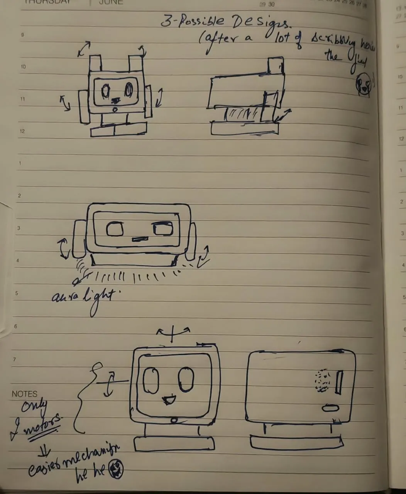
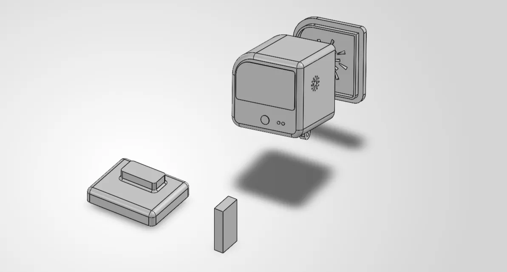

PersonalA personal build2026
DeskMilo, a desk companion that turns to look at you
A personal build on a Raspberry Pi. It journals a thought, sends a voice message, sets a reminder or plays music.
- My part
- Everything: concept, mechanism, CAD and build
- Tools
- Raspberry Pi, Python, SolidWorks
- Status
- Prototype
This page is a piano roll. Its keys run down the left edge: click one, or click the paper to punch a note. Scrolling plays it.

Design
It started as a page of sketches: three possible designs. I kept the one that needed only two motors.
A direction in space takes two angles, a turn and a nod. One motor for each gives the head two degrees of freedom: pan and tilt. A third motor would tip the head sideways, but it wouldn’t change where the head faces, so two is the fewest that let it look at you anywhere in front of the desk.


What it does
- A two-degree-of-freedom head that turns toward you.
- A speaker, so it can answer questions.
- Cooling, so it doesn’t overheat on the desk.
- Connects to GPT-style assistants.